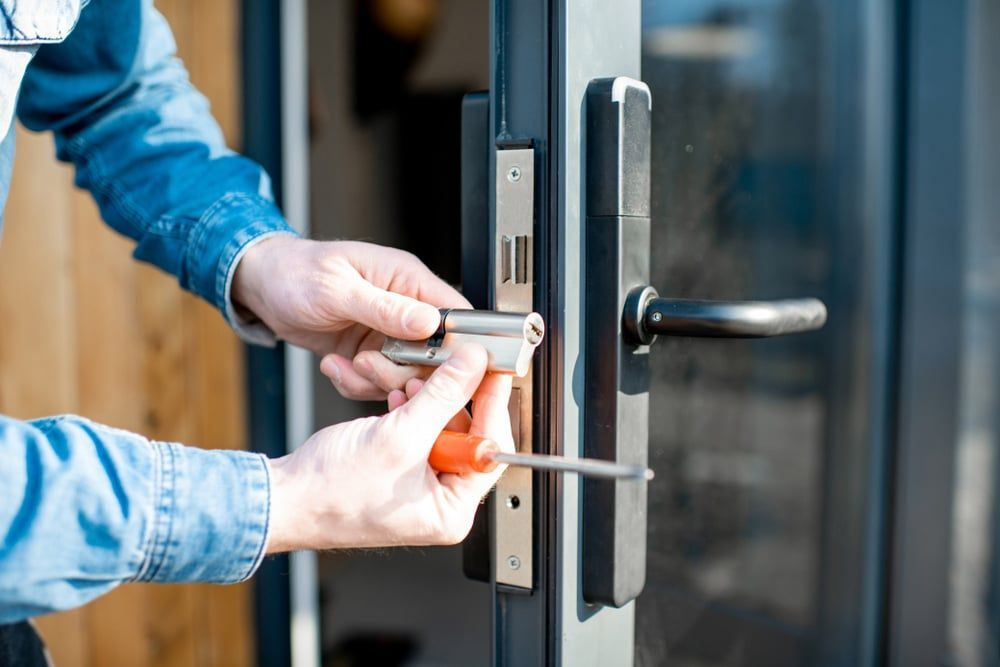

On this page
AT A GLANCE
Our locksmith services cover homes, businesses and vehicles, from lockouts, lock repairs and key duplication to master key and restricted key systems, with 24/7 emergency help. Northern NSW is serviced from our Ballina showroom.
Master Locksmith Services
At SPL Security Solutions, our Master Locksmith services help to ensure the security and accessibility of homes, businesses and vehicles. We can help with restricted key cutting, lock installation, emergency lockout assistance, security assessments and much more. Our services are tailored to meet the needs of commercial clients, multi-residential complexes, and institutions, delivering reliable and high-end solutions.
As Master Locksmiths, we bring advanced qualifications, extensive training, and a commitment to excellence that sets us apart. This means you benefit from higher-quality workmanship, precision, and the added trust of working with professionals who are fully licensed, certified, and police-checked.
Whether you’ve lost your keys, need a lock repaired, or want to upgrade the security of your premises, our Master Locksmiths provide the expertise and tools required for the job, 24/7. We also offer ongoing support and maintenance, ensuring your security systems remain effective and up to date.
For more information, call (07) 55 888 111. We service the Gold Coast, Brisbane and Northern NSW. Contact us today to discuss how we can provide customised security solutions for your specific needs.
Why You Should Use a Master Locksmith
SPL Security Solutions hold the highest standard and recommend only using a Master Locksmith.
- Expertise: Master Locksmiths undergo extensive training and certification, equipping us to handle a wide range of lock and security issues effectively.
- Trust: We are licensed and insured, providing peace of mind that you are working with a qualified professional.
- Quality Service: Adhering to high professional standards, we offer reliable security solutions.
- Protection Against Scams: Choosing a Master Locksmith helps you avoid unqualified individuals and ensures your security needs are met with integrity.
- Specialisation in Complex Solutions: Our Master Locksmiths specialise in designing and implementing advanced master key systems and high-security solutions for luxury developments, institutions, and large-scale commercial projects.
For top-notch security solutions, always opt for a Master Locksmith such as SPL Security Solutions.
